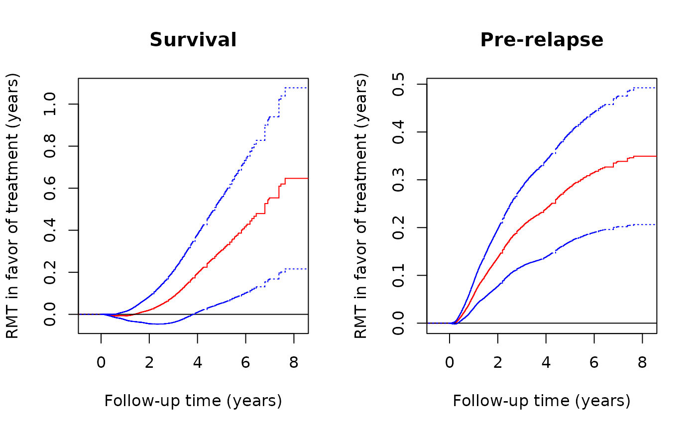

Plot the estimated treatment effect curve
plot.rmtfit.RdPlot the estimated overall or stage-wise restricted mean times in favor of treatment as a function of follow-up time.
Usage
# S3 method for class 'rmtfit'
plot(
x,
k = NULL,
conf = FALSE,
main = NULL,
xlim = NULL,
ylim = NULL,
xlab = "Follow-up time",
ylab = "Restricted mean time in favor",
conf.col = "black",
conf.lty = 3,
...
)Arguments
- x
An object returned by
rmtfit.- k
If specified, \(\mu_k(\tau)\) is plotted; otherwise, \(\mu(\tau)\) is plotted.
- conf
If TRUE, 95% confidence limits for the target curve are overlaid.
- main
A main title for the plot
- xlim
The x limits of the plot.
- ylim
The y limits of the plot.
- xlab
A label for the x axis, defaults to a description of x.
- ylab
A label for the y axis, defaults to a description of y.
- conf.col
Color for the confidence limits if
conf=TRUE.- conf.lty
Line type for the confidence limits if
conf=TRUE.- ...
Other arguments that can be passed to the underlying
plotmethod.
Examples
# load the colon cancer trial data
library(rmt)
head(colon_lev)
#> id time status rx sex age
#> 1 1 2.6502396 1 Lev+5FU 1 43
#> 2 1 4.1642710 2 Lev+5FU 1 43
#> 3 2 8.4517454 0 Lev+5FU 1 63
#> 4 3 1.4839151 1 Control 0 71
#> 5 3 2.6365503 2 Control 0 71
#> 6 4 0.6707734 1 Lev+5FU 0 66
# fit the data
obj=rmtfit(ms(id,time,status)~rx,data=colon_lev)
# plot overal effect mu(tau)
plot(obj)
# set-up plot parameters
oldpar <- par(mfrow = par("mfrow"))
par(mfrow=c(1,2))
# Plot of component-wise RMT in favor of treatment over time
plot(obj,k=2,conf=TRUE,col='red',conf.col='blue', xlab="Follow-up time (years)",
ylab="RMT in favor of treatment (years)",main="Survival")
plot(obj,k=1,conf=TRUE,col='red',conf.col='blue', xlab="Follow-up time (years)",
ylab="RMT in favor of treatment (years)",main="Pre-relapse")

par(oldpar)